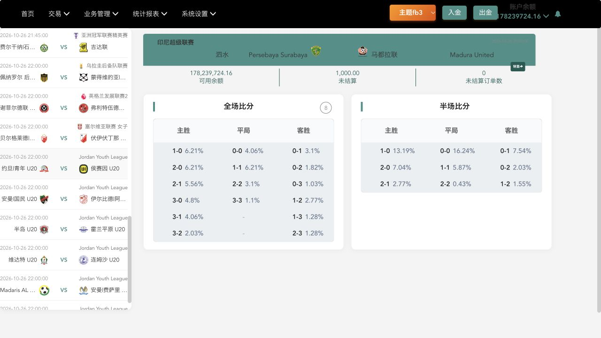
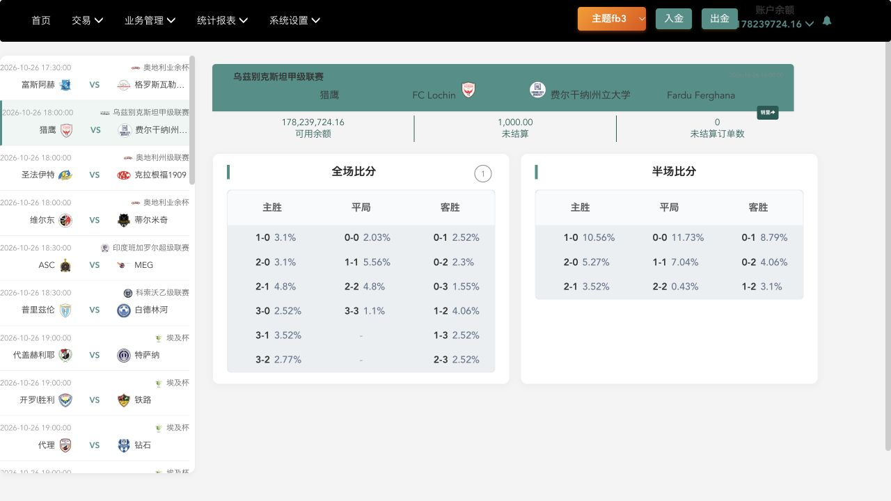
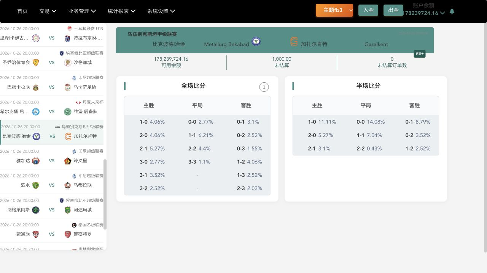

反波胆 · Compare all three platforms
Compare the profit when the selected score does not happen, using the same maximum loss for every column.
Saved snapshots · 26 October 2026 · 3 matches · 48 score selections · This report does not fetch live prices.
Common basis: profit ÷ maximum loss × 100. At 100 credits at risk, a 6.21% rate means 6.21 credits profit if the score does not happen. The 100 credits at risk are also returned. If that exact score happens, the assumed loss is 100 credits.
iSports is a hypothetical conversion. Its API supplies back odds for a score happening, not a lay quote. The website column uses its displayed percentage; its risk and settlement basis remains unverified. Betfair-derived rates are gross, before fees.
Rates stay the same when the risk changes. Credit amounts below are proportional estimates before any rounding rules.
Gap = source rate minus website rate, in percentage points (pp). A positive gap means a higher calculated return than the website; a negative gap means a lower return.
How the 反波胆 rates are calculated
- Betfair-derived API: 100 ÷ (decimal lay odds − 1). Uses the supplied lay price unchanged.
- iSports: 100 ÷ net back odds. This assumes a hypothetical lay offered at decimal odds = net back odds + 1. It is a comparison calculation, not a lay price available through iSports.
- 1CUF website: the displayed percentage, reproduced unchanged. Profit illustrations assume it uses the same maximum-loss basis.
No fees, payout multiplier or probability model has been added. The larger converted rate does not establish a better executable offer.
Capture times and limitations
iSports: 17:00:15 MYT. Betfair-derived feed: 17:03:13 MYT. Website: 17:01:52–17:03:27 MYT. These are snapshots taken up to about three minutes apart. Teams and exact kickoff were matched. A bookmaker's last-change timestamp does not by itself measure feed delay. Available size and account-specific terms may affect execution.
Original website screenshots
Persebaya Surabaya v Madura United

FC Lochin v Fardu Ferghana

Metallurg Bekabad v Gazalkent

Source comparison data (JSON) · iSports correct-score definitions
Compiled comparison evidence. API figures are calculated from saved responses; the screenshots are from 1CUF.